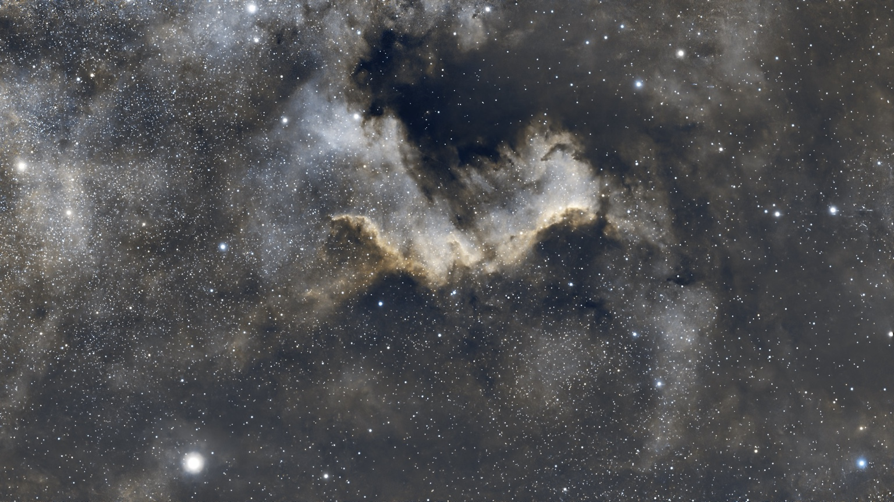

ASTROPHOTOGRAPHY · NORWAY
LYS FRA
DET FJERNE
Tåker, galakser, Månen og Solen — fotografert fra jorden.
Utforsk galleriet ↓CHRISTIAN SOLUM
Et personlig arkiv over nattehimmelen.
En samling astrofotografier av deep-sky-objekter, galakser, Månen, Solen og astronomiske hendelser. Klikk på et bilde for fullskjerm.
GALLERI